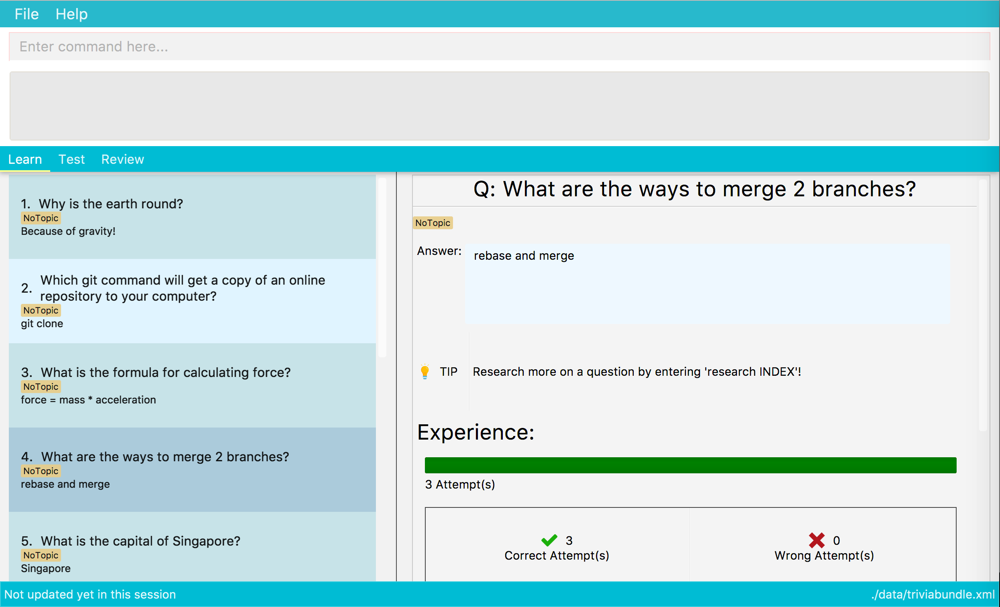

By: CS2103T W12-3 Team Since: Sept 2018 Licence: MIT
- 1. Introduction
- 2. Quick Start
- 3. Features
- 3.1. Viewing help :
help - 3.2. Adding a card:
add - 3.3. Start learning:
learn - 3.4. Editing a card :
edit - 3.5. Search for cards by question:
find - 3.6. Deleting a card :
delete - 3.7. Viewing information related to a card :
select - 3.8. Research on a question :
research - 3.9. Listing entered commands :
history - 3.10. Undoing previous command :
undo - 3.11. Redoing the previously undone command :
redo - 3.12. Clearing all entries :
clear - 3.13. Starting an Open Ended Test:
testO[coming in v2.0] - 3.14. Start a MatchTest:
testM - 3.15. View statistics for a certain test or overall learning path:
stats[coming in v2.0] - 3.16. Cram More Knowledge!:
import - 3.17. Exiting the program :
exit - 3.18. Saving data
- 3.19. Multi-Player
[coming in v2.0]
- 3.1. Viewing help :
- 4. FAQ
- 5. Command Summary
1. Introduction
3VIA is a great way for learners to reinforce and test out their knowledge. Tired of using a mouse or trackpad to navigate? Don’t worry, 3VIA is optimised for a veteran Command Line Interface (CLI) user, while still having the benefits of a beautiful Graphical User Interface (GUI).
3VIA will spur and energise your desire to be that A* student, without ever leaving the keyboard. We believe that it should only take 3 steps to get that Very Important A (3VIA, get it?).
You can read the user guide from start to finish by jumping right in to Section 2, “Quick Start” to get started or just use it as a reference. Enjoy!
2. Quick Start
-
Ensure you have Java version 9 or later installed in your computer.
-
Download the latest
3VIA.jarhere and copy the file into the folder you want to use as the home folder for your 3VIA app. -
Double-click the icon to start the app. The GUI should appear in a few seconds and you’re ready to go!
Some things to try:
Type commands in the command box and press Enter to execute it.
e.g. typinghelpand pressing Enter will open the help window.Here are some example commands you can try:
-
learn: Will direct you to the learn page with all the avaiable cards displayed. -
addadd q/What is the formula for force? a/force = mass * acceleration a/Physics: adds a card with questionWhat is the formula for force?to the the trivia application. -
delete3: deletes the 3rd card in the current list -
exit: exits the app
Refer to Section 3, “Features” for more details of each command.
-
3. Features
Command Format
-
UPPER_CASE are parameters you should include in use the command
add q/QUESTIONmeansadd q/Why is the earth round. -
Items in square brackets are optional
q/QUESTION [t/TOPIC]meansq/Why is the earth round t/Physics -
Items with
…after them can be used optionally or multiple times[t/TOPIC] …can bet/Physics t/Math t/Literature -
Parameters written can be in any order
q/QUESTION a/ANSWERcan bea/ANSWER q/QUESTION -
INDEXrefers to the index number of the card in the most recently displayed card listINDEXmust be a positive integer, i.e. 1, 2, 3 …
3.1. Viewing help : help
Opens a window to our 3VIA User Guide.
Format: help
3.2. Adding a card: add
Adds a card to 3VIA
Format: add q/QUESTION a/ANSWER [t/TOPIC]…
A card can have any number of topics. If there are no topics specified, NoTopic will be assigned to the card.
|
Notes
-
3VIA does not allow duplicated questions.
-
Questions are compared without regards to their case sensitivity. Hence question of "why is…" is same as "Why is…".
-
When adding questions and answers, 3VIA will automatically trim the whitespaces that are found in preceding and endings of the text.
Examples:
-
add q/What is the formula for force? a/force = mass * acceleration t/Physics -
add q/What is the capital of Singapore? a/Singapore t/GeneralKnowledge t/Geography
3.3. Start learning: learn
Will direct you to the learn page with the cards you want to learn. If you want to learn from everything that is
available in the deck, simply execute learn. If you want to learn from the cards that are related to a certain topic,
simply enter learn TOPIC.
Format: learn [TOPIC]
3.4. Editing a card : edit
Edits an existing card at specified INDEX with updated input values. After the edits are made, the card that was edited
will be selected so that you can review the changes made to the card.
Format: edit INDEX [q/QUESTION] [a/ANSWER] [t/TOPIC]…
Examples:
-
add q/Why will the apple fall from the tree? a/Because it was ripe!
edit 1 q/Why will the apple fall from the tree? a/Because of gravity!
Edits the answer of the 1st card to beBecause of gravity!. -
add q/Why can’t a bicycle stand on its own? a/Two tired. t/Funnyedit 2 q/Why did the young mother fall asleep when put her child in bed t/
Edits the question of the 2nd card to beWhy did the young mother fall asleep when put her child in bed?and the card will have a topic ofNoTopic.
3.5. Search for cards by question: find
Finds a list of card(s) whose question contain at least one of the given keywords.
Format: find KEYWORD [MORE_KEYWORDS]
Examples:
-
find Why
ReturnsWhy will the apple fall from the tree?and `Why can’t a bicycle stand on its own?` -
find why what where
Returns all cards having questionwhy,what, or `where`
3.6. Deleting a card : delete
Deletes the card from the specified INDEX.
Format: delete INDEX
Examples:
-
learn
delete 2
Deletes the 2nd displayed card. -
find Why
delete 1
_Deletes the 1st card in the results of thefindcommand._xs
3.7. Viewing information related to a card : select
Selects the card identified by the index number used in the displayed card list. Loads the card’s information panel.
Format: select INDEX
Examples:
-
learn
select 2
Selects and opens a Card Info Panel for the 2nd displayed card. -
find Why
select 1
Selects and opens a Card Info Panel for the 1st card in the results of thefindcommand.
3.8. Research on a question : research
Loads the Google search page for the question of the identified card. If, for any reason, you are not able to load the
Google search page, 3VIA will redirect you to DuckDuckGo’s search engine with the selected question as the search query.
Format: research INDEX
| You would need to have an internet connection to load the online search engine. If you are not able to load the Google’s and DuckDuckGo’s search engine, you will be redirected to a page with an error message. |
3.9. Listing entered commands : history
Lists all the commands (which includes the valid and invalid commands), that you have entered from your most recent command.
Format: history
|
Pressing the ↑ and ↓ arrows will display the previous and next input respectively in the command box. |
3.10. Undoing previous command : undo
Restores the app to the state before the previous undoable command was executed.
Format: undo
|
Undoable commands: those commands that modify the app’s content ( |
Examples:
-
delete 1
learn
undo
`delete 1` command is reversed -
select 1
learn
undo
Theundocommand not executed as there are no undoable commands previously executed. -
delete 1
clear
undo
`clear` command is reversed
undo
_`delete 1` command is reversed -
import C:\Users\username\Desktop\text.txt
learn
undo
`import` command is reversed
3.11. Redoing the previously undone command : redo
Reverses the most recent undo command.
Format: redo
Examples:
-
delete 1
undo
`delete 1` command is reversed
redo
`delete 1` command is reapplied -
delete 1
redo
Theredocommand was not executed as there are noundocommands previously executed. -
delete 1
clear
undo
`clear` command is reversed
undo
`delete 1` command is reversed
redo
`delete 1` command is reapplied
redo
`clear` command is reapplied
3.12. Clearing all entries : clear
|
Use with caution! Clears all entries in 3VIA and reboots. |
Clear all entries and existing card list(If there exists).
Format: clear
Examples:
-
add q/Why is the earth round? a/Because of gravity t/Physics
clear
Card list has been cleared. -
delete 1
delete 2
delete 3
clear
No cards to be cleared.
3.13. Starting an Open Ended Test: testO [coming in v2.0]
Start an open-ended test of a specified topic. In an open-ended test, the user will get the choose whether he/she has answered correctly by comparing their answers with the expected answer.
Format: test t/TOPIC [TIMELIMIT_IN_SECONDS]
The following commands can only be used during an Open Ended Test.
3.13.1. Answering a question:
Type your answer in the command field and press enter to submit your answer. If you don’t have an answer in mind, you can just press enter with nothing in the command field. We accept your silence as an answer.
Format: ANSWER_FROM_USER
3.13.2. Determining the correctness of your answer:
After answering the question, you would be given a comparison between the expected and actual answer you entered. You would be required to determine the correctness of your answer since the questions are open ended. The app will keep track of your score.
Format: c (correct) OR x (wrong)
3.13.3. Quit the test:
Test is exited.
Format: exit
3.14. Start a MatchTest: testM
Start a test of matching questions and answers for a specified topic. In a MatchTest, all the questions and answers in
that topic will be displayed. You will then have to match all the questions to their respective answer.
Format: testM TOPIC
The navigation tabs will be disabled during the Match Test. If you want to navigate to other pages, you would need to exit
the Match Test by entering the exit command, as described in the section on Quit MatchTest.
|
The following commands can only be used during a MatchTest.
3.14.1. Match question and answer:
Will match a pair of question and answer during a MatchTest.
Format: INDEX_OF_QUESTION INDEX_OF_ANSWER
An example is given in the below screenshot, where the command of 1 2 will select the question and answer that is boxed
in green.
Another way to match a pair of question and answer is to solely enter the index of the answer. By doing so, we will
assume that you would be matching a question at the top to the answer that is specified.
Format: INDEX_OF_ANSWER
An example of such a usage can be seen in the the below screenshot.

| If you have 2 questions with the same answer, then there will be 2 possibilities in matching 1 of the questions. Also note that answers are case sensitive. Hence the answer of "f = m * a" is not equal to "F = m * A". |
3.14.2. Quit MatchTest:
If you want to stop an ongoing MatchTest, you can enter the exit command at any time during the test. The command
will bring you to the test menu page.
After the MatchTest has ended, a result page will be shown. After reviewing your results, you can exit from the MatchTest by
entering the exit command. The command will bring you to the test menu page.
Format: exit
| Your attempts from an incomplete MatchTest will be discarded. Only those attempts from a completed MatchTest will be saved into your hard disk. |
3.15. View statistics for a certain test or overall learning path: stats [coming in v2.0]
Results of previous tests, questions, expected answers and the user’s answers for that particular topic will be displayed.
A summary of testing results will be displayed in statistics page.
Format: stats TOPIC or stats or
stats HL
Example:
stats Physics
Displays the overall statistics of questions attempted of Physics.
stats
Displays the overall statistics of all questions attempted.
stats HL
Displays card list sorted by high to low times of mistakes
3.16. Cram More Knowledge!: import
Quickly import multiple flash cards from existing notes or documents into 3VIA.
Format: import FILEPATH
Example:
| The file path refers to the absolute file path of the import file. |
3.16.1. Creating your import file:
Open your existing notes or create a new one. You may use any text editing programs such as Microsoft Word, Google Docs, etc. Below are 2 rules regarding the import file type and format that must be adhered too.
-
Import file type:
-
The file must be in UTF-8 format.
-
The file must be a plain text file (i.e. file.txt).
-
-
Import file format:

| Keys | Purpose |
|---|---|
SPACE + t + / |
A space and "t/" prefix separates each topic |
TAB |
A tab space separates a question and an answer |
⏎ |
A new line separates each card |
| Duplicate questions in the import text file will result in import failure. |
3.16.2. Importing your file:
Now that your file is ready, head over to 3VIA and lets begin the import.
-
Enter the
importcommand followed by the absolute file path of the import file you previously created in the command box as seen below.
-
Hit enter/ return to confirm. 3VIA will now display a list of cards that has been imported.
You can edit or delete any of the recently imported cards and/or even undo the import if you are not satisfied
with the cards imported.
|
3.17. Exiting the program : exit
Exits the program.
Format: exit
If the exit Command is used during in any of the testing mode, it will bring you to the test menu page instead of
exiting from the programme. If you want to exit from the program, execute the exit command again.
|
3.18. Saving data
3VIA saves data in the hard disk automatically after any command that changes the data.
There is no need to save manually.
3.19. Multi-Player [coming in v2.0]
{explain how the user can enable/disable Multi-Player}
4. FAQ
Q: How do I transfer my data to another computer?
A: Install the app in the other computer and overwrite the empty data file it creates with the file that contains the data of your previous 3VIA application folder.
5. Command Summary
-
Add
add q/QUESTION a/ANSWER [t/TOPIC]…
e.g.add q/What is the formula for force? a/force = mass * acceleration t/Physics -
Clear :
clear -
Delete :
delete INDEX
e.g.delete 3 -
Edit :
edit INDEX [q/QUESTION] [a/ANSWER] [t/TOPIC]…
e.g.edit 1 q/Why will the apple fall from the tree? a/Because of gravity! -
Find :
find KEYWORD [MORE_KEYWORDS]
e.g.find Why -
Learn :
learn [TOPIC] -
Help :
help -
Select :
select INDEX
e.g.select 2 -
Research :
research INDEX -
History :
history -
Undo :
undo -
Redo :
redo -
Open Ended Test :
testO TOPIC TIMELIMIT_IN_SECONDS-
Input the answer :
YOUR_ANSWER -
Correctness of answer :
c(correct) ORx(wrong)
-
-
MatchTest :
testM TOPIC-
Match question to its answer :
INDEX_OF_QUESTION INDEX_OF_ANSWERorINDEX_OF_ANSWER -
Exit from MatchTest :
exit
-
-
View statistics of test :
stats [TOPIC]orstatsorstats HL -
Mass Import :
import FILEPATH